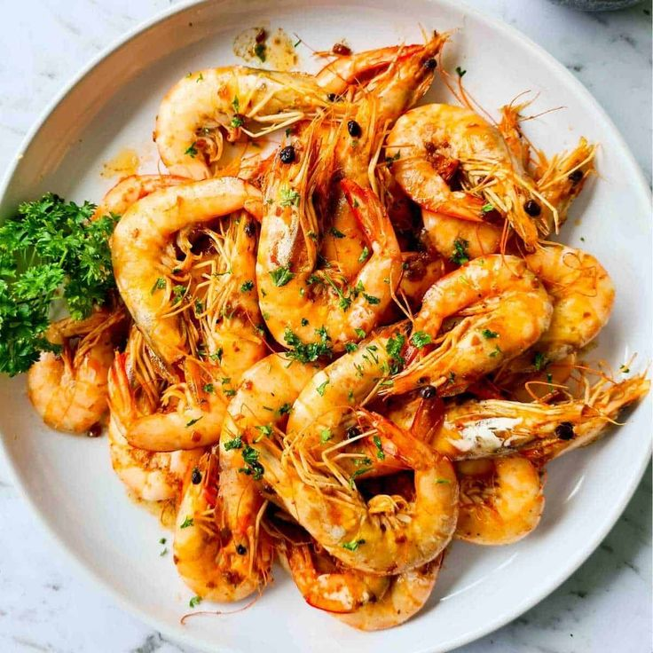

← Back to Menu
Garlic Butter Shrimp
Quick, flavorful shrimp in garlic butter sauce.

Ingredients
- 200g shrimp, peeled & deveined
- 2 tbsp butter
- 3 garlic cloves, minced
- Salt & pepper to taste
- Optional parsley for garnish
Instructions
- Melt butter in a pan over medium heat.
- Add garlic and sauté for 1–2 minutes.
- Add shrimp and cook 3–4 minutes until pink.
- Season with salt and pepper.
- Garnish with parsley and serve immediately.